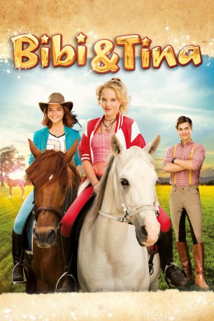

#4326 Bibi & Tina 1 - Der Film
 gesehen am 11.09.2016
gesehen am 11.09.2016
 
 IMDB-Wertung: 5.0 / 10
IMDB-Wertung: 5.0 / 10  Metascore: 0
Metascore: 0 
In der neuesten Geschichte auf dem Martinshof warten wieder jede Menge Abenteuer auf die unzertrennlichen Freundinnen Bibi und Tina. Diesmal fordert das bevorstehende Pferderennen auf Schloss Falkenstein ihre Freundschaft heraus. Sophia von Gelenberg setzt alles daran, sich Tinas Freund Alex von Falkenstein zu angeln und dank des listigen Geschäftsmannes Hans Kakmann gibt es noch mehr Turbulenzen, da dieser es auf das süße Fohlen "Socke" von Graf Falko abgesehen hat. Mit etwas Hexerei versucht Bibi die ganze Situation zu retten, doch der Zauber geht nach hinten los. Beim großen Pferderennen muss Bibi gleich an mehreren Fronten Unheil abwenden. Sowohl ihre Freundschaft zu Tina als auch Fohlen "Socke" sind in Gefahr...
Jahr: 2014
Dauer: 101 Minuten
FSK: 0
Land: Deutschland Studio: DCM Film DistributionTonspuren:
Untertitel:
Auflösung: 1080p (1920x1080) Größe: 7936 MB
Genre: Animation/Trick, Familie
Regisseur: Detlev Buck
Drehbuch: Fumihiko Sori
Soundtrack:
Darsteller:
- Lina Larissa Strahl als Bibi Blocksberg
- Lisa-Marie Koroll als Tina Martin
 Louis Held als Alex v. Falkenstein
Louis Held als Alex v. Falkenstein Ruby O. Fee als Sophia v. Gelenberg
Ruby O. Fee als Sophia v. Gelenberg- Charly Hübner als Hans Kakmann
 Michael Maertens als Falko v. Falkenstein
Michael Maertens als Falko v. Falkenstein- Winnie Böwe als Frau Martin
- Fabian Buch als Holger Martin
- Max von der Groeben als Freddy
 Detlev Buck als Dr. Eichhorn
Detlev Buck als Dr. Eichhorn- Martin Seifert als Butler Dagobert
- Daniel Scherer als Assistent Kakmann 1
- Artur Scherer als Assistent Kakmann 2
- Hong Thay Lee als chinesischer Chauffeur
- Christiane Wallenhauer als Tigermama
- Carsten Berger als Nachbar , uncredited
- Reinhardt Großmann als Gast Pferderennen , uncredited
- Jimmy Kitson als Maik 2 , uncredited
- Anton Zühlke als Maik 1 , uncredited
Datei: X:\Kinder Collections\Bibi & Tina\Bibi & Tina 1 - Der Film (2014, FSK0, 1920x1080).mkv seit 11.09.2016
Festplatte: Kinder-Filme+Trick
 Es gibt insgesamt 9 Filme in der Gruppe 'Kinder Collections\Bibi & Tina'
Es gibt insgesamt 9 Filme in der Gruppe 'Kinder Collections\Bibi & Tina'